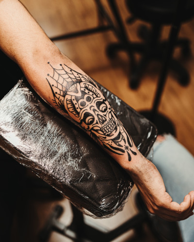
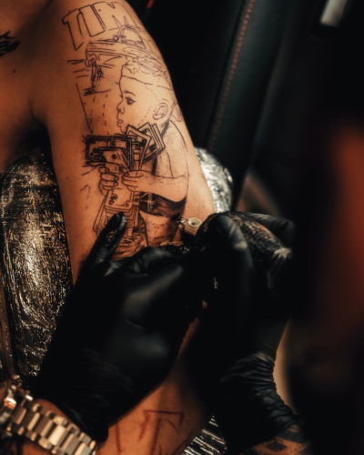
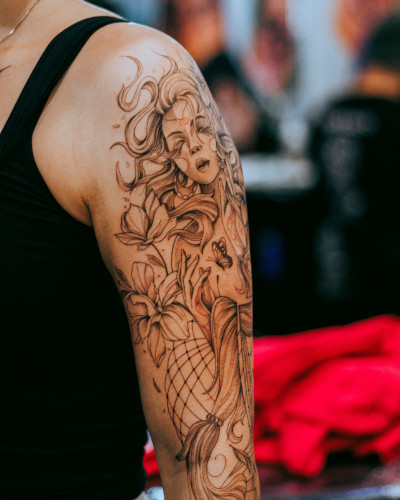

Artistas Autorais
Não fazemos cópias. Cada projeto é desenhado do zero para se adaptar à anatomia e história de cada cliente.
No Aura Ink Studio, transformamos suas histórias em tatuagens autorais e atemporais, em um ambiente seguro e sofisticado.
Quero Agendar Minha TattooAlta costura na pele. Unimos arte autoral, segurança médica e atendimento exclusivo.
Não fazemos cópias. Cada projeto é desenhado do zero para se adaptar à anatomia e história de cada cliente.
Processos de esterilização rigorosos, materiais 100% descartáveis e tintas veganas regulamentadas pela Anvisa.
Atendimento com hora marcada em salas individuais. Conforto, privacidade e uma experiência sem pressa.
Conheça os traços e estilos que definem nossa identidade visual.



A confiança de quem já eternizou sua arte com a gente.
"A experiência foi incrível do início ao fim. O atendimento privado faz toda a diferença, me senti super segura e a tatuagem fineline ficou com um traço impecável, exatamente como eu queria."
Mariana Costa Cliente Aura Ink
"Ambiente extremamente limpo, nível hospitalar mesmo. Fiz um fechamento de braço em Blackwork e a cicatrização foi perfeita seguindo as orientações. Indico de olhos fechados."
Thiago Rocha Cliente Aura Ink
"Profissionais fantásticos. Levei uma ideia abstrata e o artista criou um desenho autoral que superou minhas expectativas. Vale cada centavo pelo profissionalismo."
Carlos Eduardo Cliente Aura Ink
Tudo o que você precisa saber antes de fazer sua tatuagem.
O processo começa 100% online pelo nosso WhatsApp. Você envia sua ideia, referências, local do corpo e tamanho aproximado. Nós avaliamos, passamos a estimativa e agendamos o dia da sua sessão privada.
Não. A criação da arte exclusiva e autoral já está inclusa no valor final da sua sessão de tatuagem. Nós desenhamos e ajustamos com você até ficar perfeito.
Após a sessão, aplicamos uma película protetora tecnológica (fita de cicatrização). Você receberá um guia completo em PDF pelo WhatsApp detalhando a higienização, pomadas recomendadas e o que evitar nos primeiros 15 dias.
Aceitamos Pix, cartões de débito e parcelamos em até 10x sem juros no cartão de crédito para projetos de fechamento ou sessões mais longas.
Fale direto com nosso especialista e faça seu orçamento exclusivo através do nosso assistente virtual.
Iniciar Orçamento Gratuito